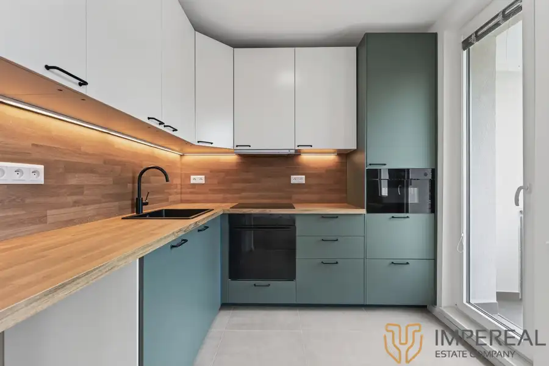
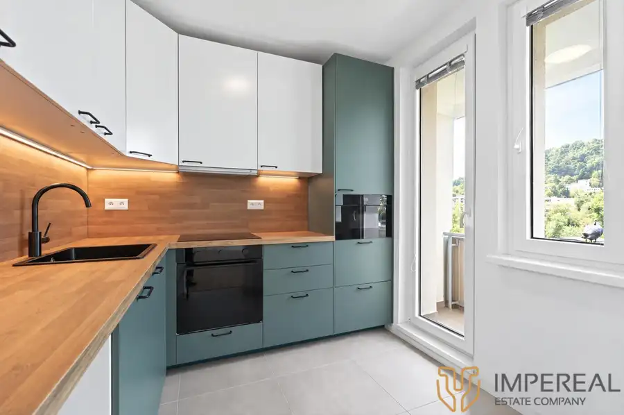
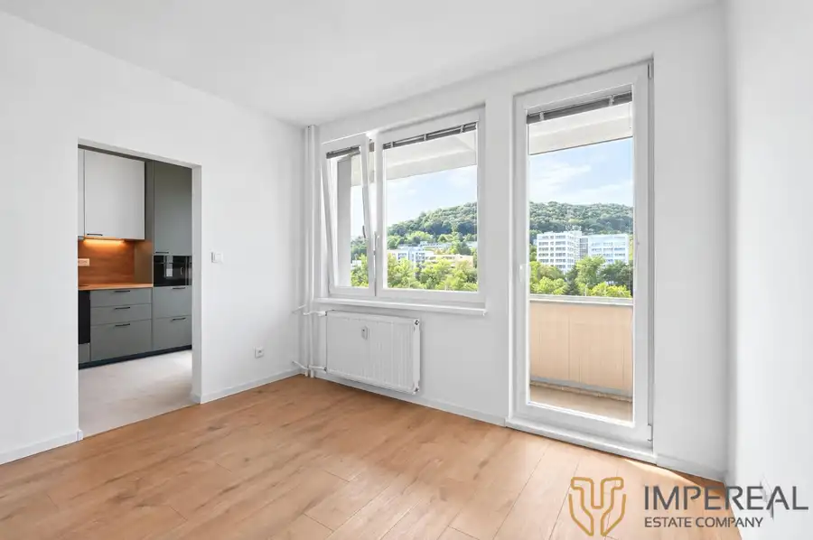
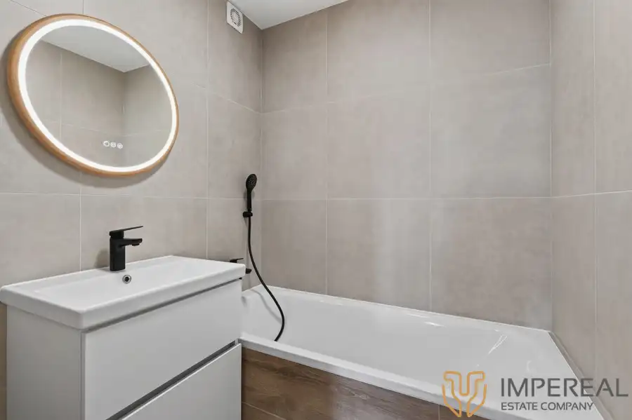
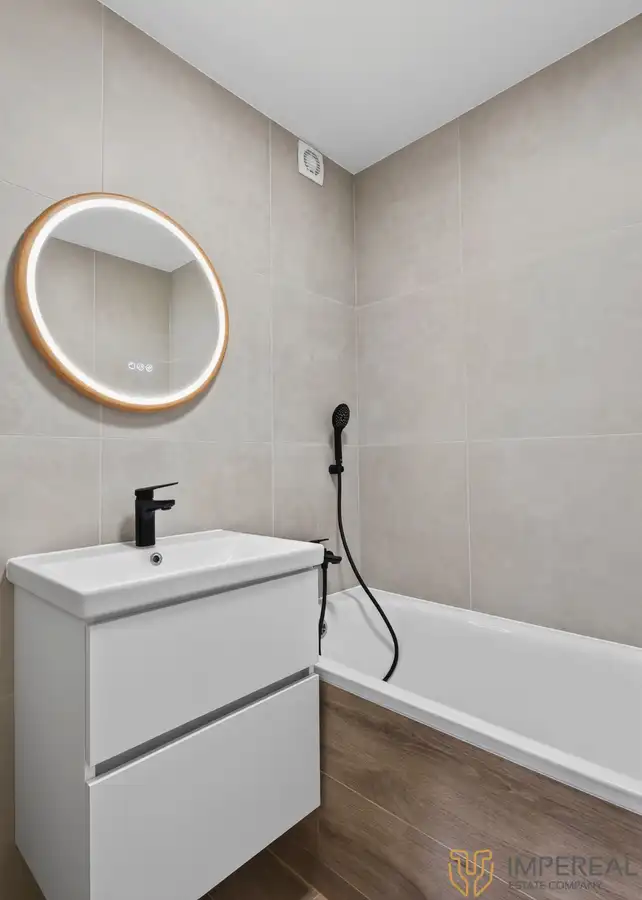
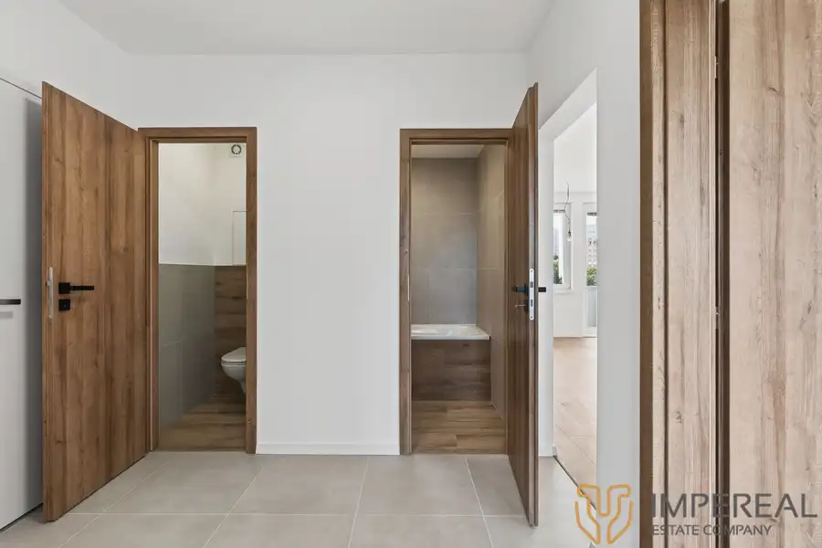

Impereal - na predaj 4-izb.byt kompletná rekonštrukcia - Dúbravka
Dúbravka, Bratislava







- Dispozícia4-izbový
- Plocha85 m²
- Poschodie6. z 8
- StavKompletná rekonštrukcia
- VlastníctvoOsobné
- Energetická triedaB
O nehnuteľnosti
IMPEREAL Vám ponúka na predaj 4-izbový byt o rozlohe 81,5 m2 vrátane veľkej loggie, ktorý sa nachádza v Dúbravke - na ulici Ľuda Zúbka č. 27,situovaný je na 6.p/ z 8 p. a je stvorený na spokojné a tiché bývanie. Byt PRÁVE PREŠIEL KOMPLETNOU NOVOU REKONŠTRUKCIOU, ktorá ponúka: nové rozvody elektriny (s revíznou správou),nové rozvody vody, stierky a maľovky, dlažby, plávajúce podlahy, nová sanita, vymenené zárubne, interiérové a vchodové bezpečnostné dvere. V byte sú plastové okná, ktoré vylepšili vzhľad a ušetria veľa energie. No a samozrejmosťou je nová moderná kuchynská linka vrátane spotrebičov: umývačka riadu, elektrická teplovzdušná rúra, indukčná varná doska, digestor, mikrovlnná rúra. Už je len na vašej predstavivosti ako si byt zariadite, farebne doladíte a spríjemnite. No a určite treba pripomenúť aj latkovú pivnicu (1,5m2), ktorá slúži na skladovanie nie tak často používaných vecí a nachádza sa v suteréne bytového domu DISPOZÍCIA BYTU: vstupná predsieň, po ľavej strane sa nachádza samostatná toaleta a kúpeľňa s vaňou. Oproti vchodu je obývacia izba, ktorá je priechodná do samostatnej kuchyne. Po pravej strane sa nachádzajú dve samostatné izby a za malou predsienkou je ďalšia samostatná izba.Výstup na veľký balkón je z kuchyne a z obývačky.BYTOVÝ DOM je zateplený, prešiel rekonštrukciou spoločných priestorov, vchodových brán, stúpačiek ,výťahu a strechy.LOKALITA: mestská časť Dúbravka je známa pokojnejším charakterom, ideálna pre rodiny s deťmi, ktorá ponúka výbornú občiansku vybavenosť. V okolí sú školy, škôlky, obchody (Terno, Kaufland, Billa, Lidl, Tesco), zdravotné strediská, pošta, lekárne a reštaurácie. Pár minút chôdze od ulice Ľuda Zúbka je nákupné centrum Saratov, v blízkosti je nákupné centrum Borry Mall ,zimný štadión, kúpalisko Rosnička atď .Dúbravka je dobre prepojená s centrom Bratislavy prostredníctvom električiek (linky 4) a autobusov (č. 20, 83, 84, N34) a rýchlo sa dostanete aj na diaľničný obchvat.VÝHODY: - predpríprava na klimatizáciu - trojfázový istič - po kompletnej rekonštrukcii ešte neobývaný - lokalita plná zelene, ihriská - tri samostatné nepriechodné izby plus spoločná obývacia izba - nádherné výhľady na obe strany - iba dva byty na poschodí - výborné dopravné spojenie MHD KONTAKT A OBHLIADKY: t.č. 0902 153 108, volarova@impereal.sk , možnosť HÚ.Uvedená cena je bez ďalších poplatkov a zahŕňa:1. poradenstvo od skúseného hypotekárneho špecialistu, ktorý Vám pomôže zvládnuť celý proces po finančnej stránke2. kompletný sprostredkovateľský a právny servis vrátane všetkých poplatkov s tým súvisiacich ( vyhotovenie zmluvy o budúcej zmluve, rezervačná zmluva, vypracovanie a autorizácia kúpnej zmluvy a prípadné dodatky a komunikácia priamo s advokátom, vyhotovenie návrhu na vklad, protokol o odovzdaní a prevzatí nehnuteľnosti, elektronické podanie dokumentov spojených s prevodom vlastníckeho práva na kataster nehnuteľností a s tým spojený skorší zápis vlastníckeho práva max. do 20 dní)3. províziu pre realitnú kanceláriu
Parametre
- Cena vrátane energií
- Nie
- Druh
- 4 izbový byt
- Dátum zverejnenia
- 04. 10. 2026
- Energetický certifikát budovy
- B
- Orientácia
- Východná, Západná
- Podlažie
- 6
- Počet balkónov
- 1
- Počet izieb / miestností
- 4
- Počet nadzemných podlaží
- 8
- Počet pivníc
- 1
- Rok kolaudácie
- 1970
- Rok poslednej rekonštrukcie
- 2026
- Rok výstavby
- 1970
- Stav nehnuteľnosti
- Kompletná rekonštrukcia
- Telekomunikácie
- Optická sieť
- Typ
- Predaj
- Typ konštrukcie
- Panelová
- Vlastníctvo
- Osobné
- Vybavenie
- Balkón, Výťah, Verejné parkovanie, Pivnica
- Vykurovanie
- Ústredné
- Úžitková plocha
- 85 m²